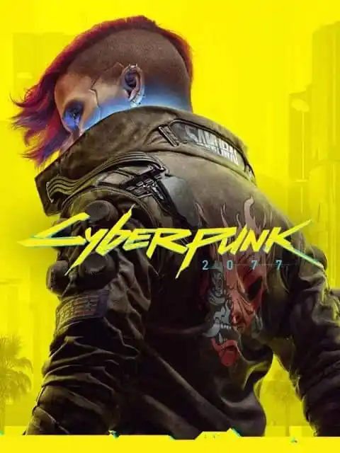

Résumé
CyberPunk 2077 est un jeu de rôle en monde ouvert développé par CD Projekt RED. Le joueur incarne V, un mercenaire qui évolue dans la mégalopole futuriste de Night City.

CyberPunk 2077 est un jeu de rôle en monde ouvert développé par CD Projekt RED. Le joueur incarne V, un mercenaire qui évolue dans la mégalopole futuriste de Night City.
Metacritic a attribué à CyberPunk 2077 une note globale positive.
| Metascore | 86 |
|---|---|
| Positive | 0 Reviews |
| Mixed | 0 Reviews |
| Negative | 0 Reviews |
86
Avis general des joueurs
Une ville dense et une narration réussie, qui ont gagné en qualité grâce aux mises à jour après un lancement difficile.
0
Notre avis
Avis négatif à compléter.
Vous pouvez acheter CyberPunk 2077 sur les plateformes suivantes :